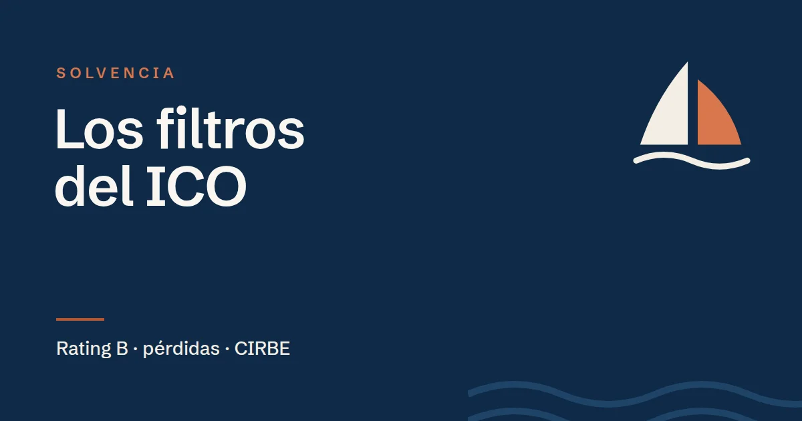

Blog de ICO Crecimiento
Artículos prácticos sobre ICO Crecimiento y la financiación de pymes: casos por sector, comparativas y consejos para preparar una buena solicitud. Por Javier Beltrán, de Ítaca Crecimiento.
-

Cancelar deuda a corto plazo con ICO Crecimiento: cuándo tiene sentido
ICO Crecimiento permite usar el circulante para cancelar deuda a corto plazo con proveedores o bancos. Cuándo tiene sentido y qué tener en cuenta.
-
Cómo leer tu informe CIRBE antes de pedir ICO Crecimiento
El ICO consulta tu CIRBE al estudiar ICO Crecimiento y antes de firmar. Cómo pedir el informe, qué significa cada dato y qué revisar antes de solicitar.
-

ICO Crecimiento o leasing para comprar maquinaria: cuál conviene
ICO Crecimiento financia maquinaria a 10 años con 2 de carencia. Diferencias con el leasing en plazo, propiedad, IVA y fiscalidad, y cuándo conviene cada uno.
-

Cuánto cuesta un préstamo ICO Crecimiento: tipo, comisiones y un ejemplo completo
Todo lo que se paga en ICO Crecimiento: Euríbor más margen, comisión de apertura, cancelación anticipada, aval y un ejemplo de 400.000 € a 10 años.
-

Por qué el ICO deniega ICO Crecimiento: los filtros de solvencia
Rating mínimo B, pérdidas, patrimonio neto, CIRBE y empresa en crisis: los filtros del ICO antes de aprobar ICO Crecimiento y cómo comprobarlos.
-
ICO Crecimiento o préstamo bancario: cuál le conviene a tu pyme
Comparamos ICO Crecimiento con un préstamo o una póliza del banco: quién decide, plazos, carencia y en qué casos conviene cada uno.
-

Qué se puede financiar con ICO Crecimiento: ejemplos por tipo de gasto
Ejemplos concretos de lo que se puede financiar con ICO Crecimiento: circulante, maquinaria, vehículos, software, I+D, marca y más, con los porcentajes que cubre.
-
ICO Crecimiento para empresas de transporte: cómo financiar el circulante
Cómo usar ICO Crecimiento en transporte: gasoil y nóminas mientras cobras, cancelar deuda a corto plazo o invertir en naves. Los camiones no se financian.
-

9 errores al solicitar ICO Crecimiento y cómo evitarlos
Los errores más frecuentes al pedir ICO Crecimiento: requisitos sin comprobar, cifras que no cuadran, el cuestionario de sostenibilidad y más.